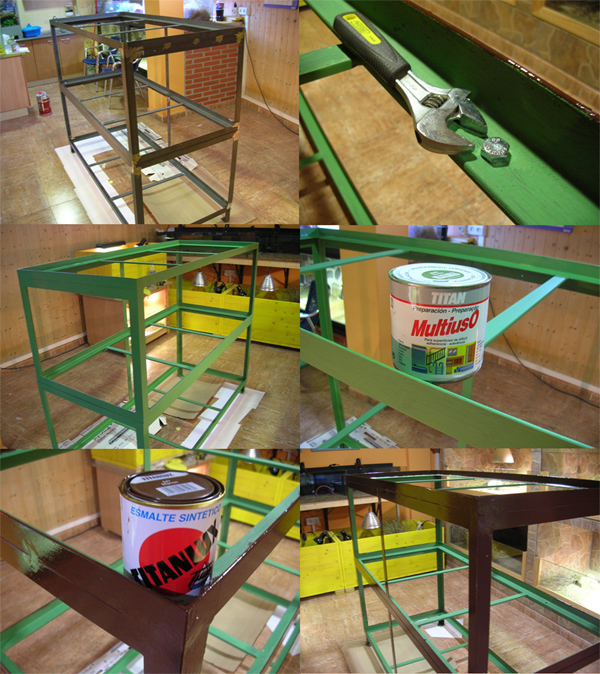
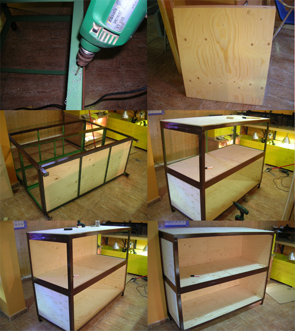
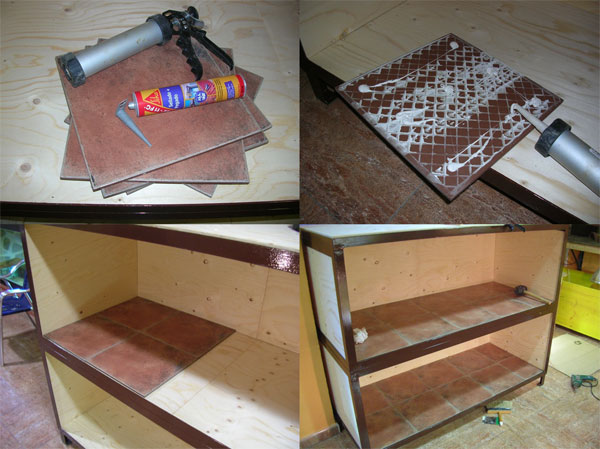
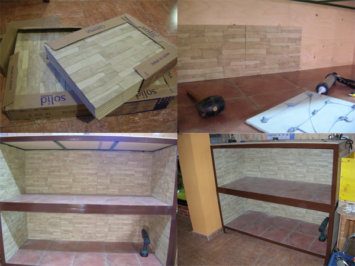
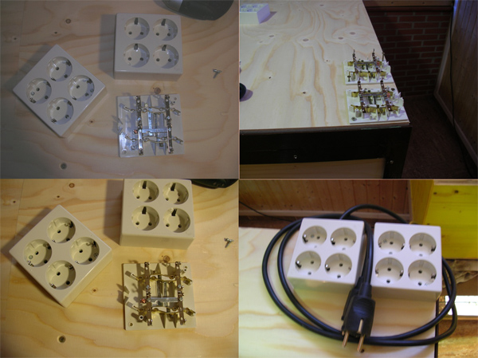
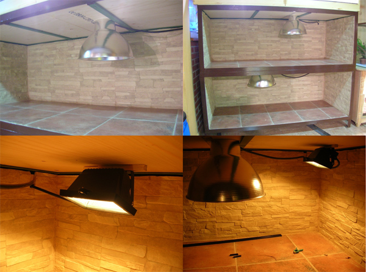
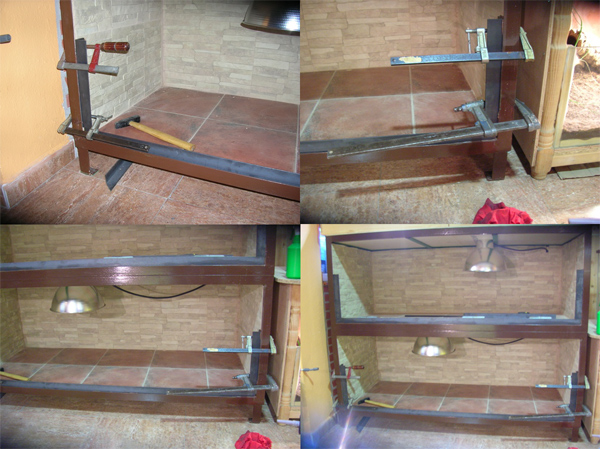
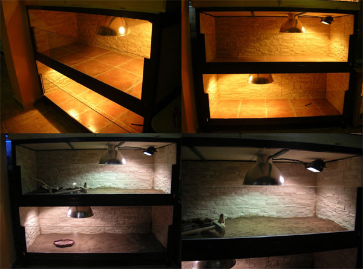
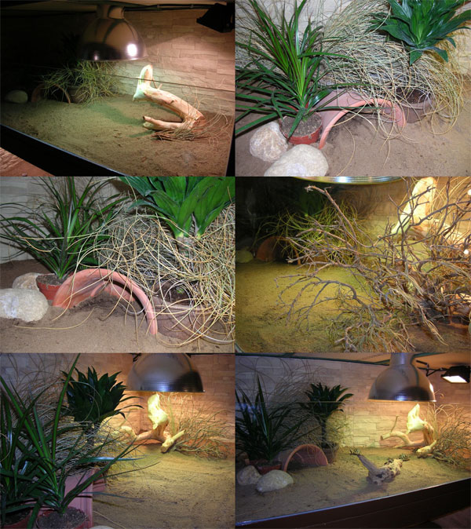
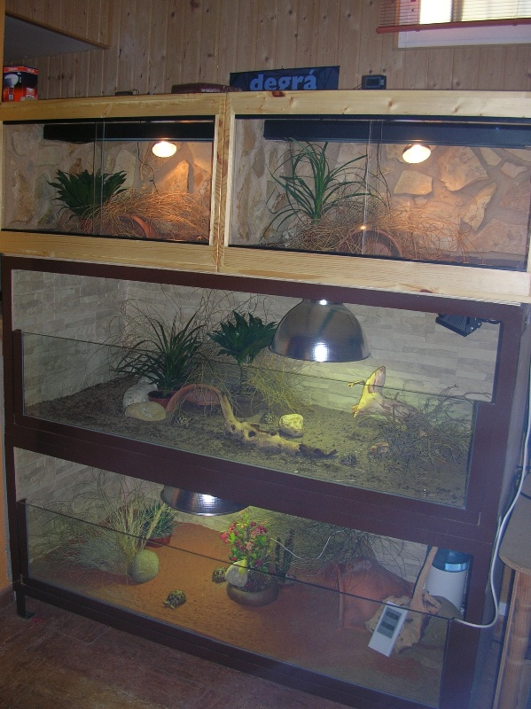

|
BATER�A DE TERRARIOS
DOBLE EN �NGULO DE HIERRO
Fernando P�rez, 2008
Para dar cabida a las nuevas cr�as que nacen en casa y albergar
algunos ejemplares para observar su completo crecimiento he decidido
construir dos terrarios de gran tama�o que ir�n instalados uno
encima de otro. A diferencia de los dem�s alojamientos que se
encuentran en mis instalaciones he decidido realizar estos con
�ngulo de hierro, de esta manera minimizo obras inoportunas en la
habitaci�n destinada a los animales y garantizo una fabricaci�n m�s
r�pida y menos tediosa.
He de decir que el resultado ha sido asombroso, de hecho si volviera
a tener que empezar a instalar alojamientos en casa de medio o gran
tama�o sin lugar a duda realizar�a este tipo de recintos. Bajo
coste, rapidez m�xima y duraci�n de por vida, �qu� m�s se puede
pedir?
La �nica pega que tiene el realizar este tipo de recintos es
fabricar la estructura con �ngulo de hierro. La mejor forma de
solucionarlo es acudiendo a un herrero o taller de corte y soldadura
de hierro que nos pueden realizar la estructura. El coste no ser�
muy alto ya que el material (�ngulo de 30/40/50mm, a elegir) no es
nada caro, as� que �nicamente ser� el trabajo de corte y soldado de
las piezas para fabricar el cascar�n de los alojamientos.
En este caso concreto, s�lo voy a utilizar dos terrarios dispuestos
uno encima del otro. As� que fabricaremos dos cascarones distintos,
uno para cada alojamiento, que luego ser�n anclados con tortiller�a.
As� mejoramos el manejo de la estructura que ser� mucho m�s f�cil
individualmente que si se realizara todo en una sola pieza.
Las medidas que utilizar� individualmente por cada alojamiento ser�n
de 170cm de largo x 70cm de fondo x 60cm de alto. El fondo ser� de
70cm ya que, como la estructura ser� soldada en un taller fuera de
casa, es necesario que entre sin problemas por la puerta de acceso a
la habitaci�n bichera. Pero las medidas podr�an ser distintas sin
ning�n tipo de problema. La fortaleza de los �ngulos de hierro es
insuperable, as� que nunca tendremos miedo a que puedan deformarse
por el peso de los alojamientos y podremos utilizar las medidas que
nos vengan en gana.
El alojamiento que ir� en la zona inferior de la estructura tambi�n
lleva unas patas para levantarse del suelo de la habitaci�n y
facilitar la limpieza del sitio donde se instalar�, as� levantaremos
tambi�n un poco el recinto y ser� m�s c�modo para trabajar con los
animales. Las patas tambi�n son con �ngulo de hierro.
Indicar que el �ngulo que he utilizado para realizar el cascar�n es
de 40mm, barras de 12 metros de longitud, muy f�cil de encontrar.
Montaje n�1
Como pod�is observar en la primera imagen la estructura ya se
encuentra dentro de la habitaci�n bichera. Unido mediante
tortiller�a, engarzamos el alojamiento superior con el inferior. As�
la estructura queda montada de una sola pieza y si en un futuro se
decide desmontarla se podr� realizar f�cilmente.
Para que el �ngulo de hierro se conserve bien, no se oxide y
mantenga buen aspecto, se le da una mano con pintura selladora
especial para hierro. En este caso concreto, he utilizado
imprimaci�n multiuso Titan de color verde. Una vez esperados los
tiempos de secado que aconseja el fabricante, se aplicar�n dos
nuevas manos con esmalte sint�tico del color deseado, en este caso
esmalte Titan de color tabaco, que ser� el que resalte en los
�ngulos de hierro que conformen la estructura.

Montaje n�1
Montaje n�2
Una vez tratado el hierro y pintada la estructura, podremos empezar
con el montaje. Los �ngulos nos permiten poder panelar de manera
facil�sima el suelo, paredes y techos de la estructura. Bastar� con
buscar planchas de la madera que deseemos y que tengan las medidas
necesarias para poder anclarse al cascar�n.
Para que la madera quede bien anclada en los �ngulos de 40mm, vamos
a realizar, con una peque�a broca de hierro y un buen taladro,
numerosos agujeritos en los �ngulos laterales y horizontales donde
ir� dispuesta la madera (suelo, fondo, techo y paredes). A trav�s de
estos agujeros podremos anclar los paneles de madera con tornillos
de rosca-madera que fijar�n perfectamente. Tambi�n se podr�a
utilizar, como anclaje al hierro, masilla de poliuretano que har�a
el mismo efecto que los tornillos. He desestimado esta opci�n por si
en un futuro se deben desmontar los alojamientos. Con tortiller�a
ser� mucho m�s f�cil el desmontaje que con la masilla.
Las maderas utilizadas son paneles contrachapados WHISA de 22mm.
Este tipo de paneles es muy similar al contrachapado marino, pero
m�s barato, De hecho contienen l�minas marinas al igual que este,
sin embargo el acabado final es m�s basto, con lo que se utiliza
mucho en exteriores. Estos tableros se encuentran en almacenes de
carpinter�a con un tama�o de 125x150cm y con un gran abanico de
grosores, desde 6 hasta 28mm. Personalmente creo que me he excedido
en el grosor del panel utilizado ya que 22mm es demasiado, con 16mm
hubiera sido m�s que suficiente, la verdad.
En el montaje inferior podemos observar la realizaci�n de los
agujeritos para anclar las madera y c�mo se van panelando suelos,
paredes, techo y fondo de los alojamientos.

Montaje n�2
Montaje n�3
Una vez panelado todo el cascar�n, procedo a ir enchapando con
azulejos el suelo y paredes de los alojamientos. Ya conoc�is mi amor
por la masilla de poliuretano, as� que un tubo de este producto, una
pistola para su aplicaci�n y una m�quina de corte de azulejos ser�n
las herramientas que necesitaremos para esta parte del montaje. Es
un trabajo muy r�pido y eficaz, la verdad, en pocos minutos
tendremos el suelo de los terrarios terminado ofreciendo la
estanqueidad necesaria al recinto para que sea duradero. Para la
zona baja he utilizado los azulejos m�s baratos y grandes que he
encontrado, puede servir cualquier sobra que tengamos por casa o
restos de existencias que se puedan encontrar en almacenes de
construcci�n a precios de saldo.

Montaje n�3
Montaje n�4
Para el fondo y paredes laterales he optado por utilizar un azulejo
gres cer�mico imitaci�n piedra, misma t�cnica de anclarlo a la
madera, misma rapidez de trabajo. Una vez pegados todos los azulejos
y esperados los tiempos de secado, para que el poliuretano haga su
trabajo, procederemos a lechear con cemento todas las uniones entre
azulejos de suelo y paredes. De esta manera, jam�s llegar� humedad a
la madera.

Montaje n�4
Montaje n�5
En la superficie alta de la estructura (techo segundo alojamiento)
instalaremos unas regletas de enchufes, que nos vendr�n fenomenal
para poder conectar la iluminaci�n de los terrarios. Es mejor
conectar la iluminaci�n y cualquier dispositivo el�ctrico a estas
tomas. De ellas partir� un �nico cable que se alimentar� de la red
el�ctrica, minimizando el cableado necesario para la instalaci�n y
la colocaci�n de temporizadores. Tambi�n nos vendr� bien tener m�s
enchufes a mano por si se desea instalar cualquier terrario peque�o
en la superficie indicada.
En las im�genes podemos observar el montaje de las dos regletas, con
cuatro enchufes cada una de ellas y con toma de corriente individual
por regleta.

Montaje n�5
Montaje n�6
Vamos con el montaje de la iluminaci�n, en este caso utilizar�
l�mpara Power de 100watios, que ir� apoyada por un foco tubular
hal�geno de 60watios. Este �ltimo con potenci�metro independiente
para as� dar la potencia deseada al foco de soleo. Esta iluminaci�n
es perfecta para dotar a alojamientos de gran tama�o de una zona de
soleamiento m�s extensa que si �nicamente dispusi�ramos de la Power.
Los plafones utilizados son de aluminio, comprados en una gran
superficie del bricolaje y a un precio exquisito (10 euros). Unas
reformas en el plaf�n, instalando portal�mparas cer�mico y cableado
necesario, ser�n los �nicos retoques necesarios para su instalaci�n.
Los focos hal�genos tubulares ya vienen de f�brica con portafocos
ideales para su proyecci�n y de venta en cualquier tienda de
iluminaci�n. El montaje es sencillo, adaptando el cableado que
necesitemos y su coste no es excesivo (12 euros, l�mpara tubular
incluida).
Abajo im�genes del montaje de plafones y foco hal�geno tubular.

Montaje n�6
Montaje n�7
Una vez montado todo el interior de los habit�culos, azulejos e
iluminaci�n, nos queda solamente disponer de los anclajes necesarios
para ubicar los cristales de los alojamientos.
Utilizando el mismo �ngulo, pegaremos trozos de �ste, con las
medidas necesarias y con masilla de poliuretano, a las zonas bajas y
laterales de los alojamientos. El poliuretano pega perfectamente el
hierro y el agarre es impresionante, as� que en este paso no es
necesario volver a soldar hierro ni otra tarea dificultosa. Bastar�
con traer las piezas de �ngulo ya cortadas y con las medidas del
suelo de los recintos. En este caso, dos de 162cm de largo para que
ancle perfectamente en su ubicaci�n. Para los laterales utilizaremos
piezas de una longitudde 30cm que ser� la altura final a la que
quede instalado el cristal. Necesitaremos cuatro piezas.
En la imagen podemos observar el anclaje con poliuretano de los
�ngulos a la superficie de los azulejos del suelo y paredes.
Utilizaremos sargentos para que el hierro no se mueva y as� la
masilla pueda agarrar en los tiempos de secado aconsejados. La
alineaci�n con el resto de �ngulos ser� importante para el resultado
final. Con un poco de paciencia y la movilidad que nos ofrece el
poliuretano para trabajar una vez anclada la pieza, podremos
dejarlas totalmente alineadas. Acabado el proceso de secado, se
pinta el anclaje de los cristales con selladora y esmalte sint�tico
del color del resto de la estructura como ya se hizo anteriormente.

Montaje n�7
Montaje n�8
Una vez pintado el anclaje de los cristales, se limpian bien todos
los restos de cemento, suciedad y polvo que pueda haber en los
futuros alojamientos. Es hora de llamar al cristalero y que venga a
instalar los cristales de los recintos.
En este caso se ha utilizado cristal laminado de 3x3mm, suficiente
para dar dureza y seguridad. En el caso de cualquier rotura
imprevista por un golpe u otra acci�n, el cristal laminado nunca se
romper� en a�icos, se rajar� y como mucho se resquebrajar� pero
jam�s saltar� ning�n trocito de cristal que pueda hacer da�o a los
animales o a nosotros en caso de accidente. El precio de los
cristales para ambos alojamientos no supera los 100 Euros.
En la imagen vemos los alojamientos con los cristales ya dispuestos
en los anclajes de hierro y la iluminaci�n en funcionamiento. Ya es
hora de ir a�adiendo substrato y materiales necesarios para ir dando
forma a los recintos.

Montaje n�8
Montaje n�9
Es una alegr�a poder disponer de espacio en recintos de un tama�o
m�s o menos grande para ejemplares de talla peque�a. Verdaderamente
es un placer poder recrear ambientes similares a los de sus h�bitats
naturales, sabiendo que se dispone de espacio para ello, aplicando
unos gradientes de temperatura y humedad m�s f�ciles de conseguir
que en terrarios de peque�o tama�o. Un extremo del recinto puede ser
un infierno en cuanto a temperatura e iluminaci�n y la otra puede
mantenerse sin problemas en unos rangos de humedad altos, con la
consiguiente disminuci�n de temperatura.
Para recrear estos gradientes utilizaremos adem�s de la iluminaci�n,
ya referida, plantas, ramajes, y un substrato id�neo para llevarlo a
cabo.
En las im�genes podemos observar el montaje del terrario destinado a
cr�as de Geochelone elegans. El substrato elegido es tierra
de huerto cernida, mezclada con arena fina. Es un substrato muy
suelto y ocupar� la zona soleada del alojamiento. En la zona de
sombra, y m�s h�meda, se le aporta gran cantidad de mantillo/turba
para que, con los riegos diarios, los rangos de humedad se mantengan
altos.
Para ayudar a crear, en la zona de sombra, un ambiente h�medo y
duradero se aportan varias plantas peque�as, un refugio, zona de
ramajes (en este caso esparto) para que los animales se escondan, y
varias piedras que mantienen la humedad cerca de las plantas y
evitan que sean mordidas por los animales. Con un riego a media
ma�ana sobre la zona m�s sombr�a, garantizamos que los animales
puedan utilizarla y termoregularse mejor, adem�s garantizamos que el
exceso de calor y aire cargado que suele acompa�ar a los recintos
cerrados en este caso no exista.
La zona soleada tambi�n debe disponer de ramajes, troncos o piedras
que sirvan de sombreo para que las tortugas se refugien. Pensad que
los animales pueden aguantar bajo las l�mparas horas y horas como
har�an en su h�bitat natural bajo el sol. Eso s�, siempre bajo alg�n
ramaje o vegetaci�n que les d� refugio del halo solar y donde se
encuentren c�modos.

Montaje n�9
La imagen inferior es el resultado final de la estructura y la
composici�n, junto a terrarios de peque�o tama�o ubicado en uno de
los laterales de mis instalaciones. Pod�a perfectamente haber
realizado una bater�a de tres pisos de altura, pero me decant� por
ubicar dos terrarios peque�os, en la parte superior, para as� poder
controlar mejor a los ejemplares con pocas semanas de vida.

Resultado final
A modo de conclusi�n y viendo el resultado durante varias semanas de
utilizaci�n, he de decir que, sinceramente, ha sido el alojamiento
m�s f�cil y r�pido que he construido. Ciertamente, la parte m�s
dif�cil es la realizaci�n de la estructura. Con las ideas claras en
cuanto a medidas finales, no ser� problem�tico que cualquier oficial
o taller especializado en corte y soldadura de hierro lo hagan sin
problemas. El resto, sencillamente, es muy f�cil y s�lo tendremos
que utilizar la ayuda de un cristalero para el acabado final.
Si nos ponemos a comparar precios de alojamientos similares en
cuanto a tama�o fabricados por especialistas en reptiles, si los
encontramos claro, la diferencia ser� enorme. Basta con mirar los
�ltimos modelos de terrarios en fibra y ver los precios de un
alojamiento de 120 de largo x 70 de fondo y 60 de alto, entorno a
los 500 Euros. Yo creo que el presupuesto total de estos dos
alojamientos que he realizado no supera ese precio, la vistosidad y
durabilidad no tiene comparaci�n.
Pues nada, espero que os sirva para daros alguna idea a la hora de
realizar vuestros alojamientos internos y que resulte pr�ctico.
Cualquiera puede hacerlo y merece la pena luego disfrutarlo
conjuntamente con nuestras tortugas.
Un abrazo
|